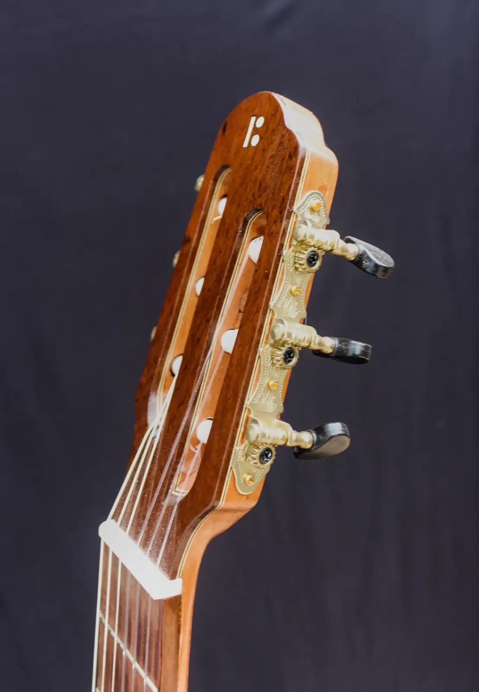

Potira Violão Clássico

Madeiras
- Tampo
- Cedro
- Fundo e laterais
- Louro Freijó
- Braço
- Cedro
- Escala
- Pau Ferro
- Cavalete
- Pau Ferro
Componentes
- Tarraxas
- Luxo
- Filetes / marchetaria
- Madeira marchetada
- Acabamento
- Goma Laca Indiana
- Trastes, nut e rastilho
- Nut e Rastilho de osso
- Preço
- R$ 4.500,00
- Identificação
- BL-25-VC-004
Potira é um violão clássico artesanal que une clareza sonora e riqueza harmônica a um visual distinto e sofisticado. Construído em madeira maciça, transmite profundidade no timbre e elegância no acabamento. Uma peça que traduz a tradição e o talento do luthier Jacir Paulo Baratieri.